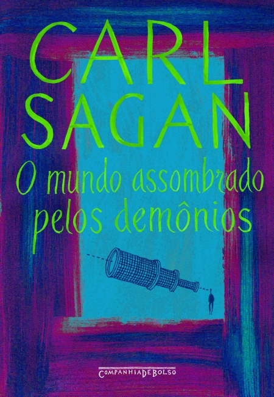

Autor: Carl Sagan
Assombrado com as explicações pseudocientíficas e místicas que ocupam cada vez mais os espaços dos meios de comunicação, Carl Sagan reafirma o poder positivo e benéfico da ciência e da tecnologia para iluminar os dias de hoje e recuperar os valores da racionalidade. Como todos os livros do autor, O mundo assombrado pelos demônios está cheio de informações surpreendentes, transmitidas com humor e graça. Seus ataques muitas vezes divertidos à falsa ciência, às concepções excêntricas e aos irracionalismos do momento são acompanhados por lembranças da infância, quando seus pais o colocaram em contato pela primeira vez com os dois modelos de pensamento fundamentais para o método científico: o ceticismo e a admiração.
Link para compra: Amazon